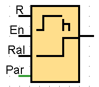

Bloque 15 - Contador adelante/atrás
Cuenta pulsos en ambas direcciones, aumentando o disminuyendo un valor según la señal recibida en sus entradas.
Ir a ejemplo práctico

Bloque 16 - Contador de horas de funcionamiento
Acumula el tiempo total de operación de un sistema o dispositivo, útil para mantenimiento preventivo.
Ir a ejemplo práctico